Pandas中的时间日期转换
知我所能者，尽善尽美～知我所不能者，虚怀若谷
小伙伴们大家好，相信大家在使用pandas的过程中一定避免不了类型转换的问题，尤其是时间类型的转换，这里我尽可能用最短的篇幅帮大家速通pandas中的时间类型转换问题。
将数字转换成datetime
将时间戳的数字转换为datetime类型
df = pd.DataFrame({'date': [1470195805, 1480195805, 1674725925]})
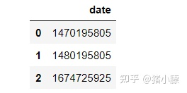
1.使用to_datetime函数
我们调用to_datetime()函数，并传入参数 unit='s'

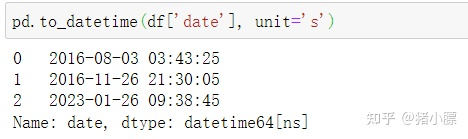
2.使用astype函数
df['date'].astype('datetime64[s]')
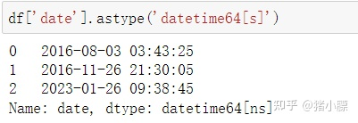
这里datetime64位NumPy类型，常见单位如下：
| Code | Meaning |
|---|---|
| Y | year |
| M | month |
| D | day |
| h | hour |
| m | minute |
| s | second |
| ms | millisecond |
| ns | nanosecond |
将字符串转换为datetime
在pandas中，string以object的形式出现。无论使用to_datetime还是astype函数都可以完成字符串到时间日期的转换。
df = pd.DataFrame({'date':['3/10/2019','3/11/2020','3/12/2021']})

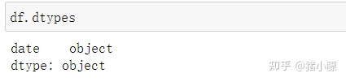
1.使用to_datetime函数
pd.to_datetime(df['date'])
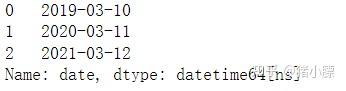
2.使用astype函数
df['date'].astype('datetime64')
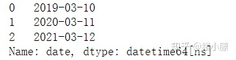
时间日期格式化
如果需要自定义日期和时间的格式，我们需要借助to_datetime()中的format参数来完成
df = pd.DataFrame({'date': ['2019-6-10 20:30:0',
'2020-7-1 19:45:30',
'2021-10-12 4:5:1']})
df['date'] = pd.to_datetime(df['date'], format="%Y-%d-%m %H:%M:%S")

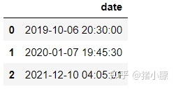
错误处理
有时我们转换不正确的日期时，系统会抛出ParseError异常，比如我不小心将2月份的日期填成了30号。
df = pd.DataFrame({'date': ['2021-02-01', '2021-02-04', '2021-02-30']})
df['date'] = pd.to_datetime(df['date'])
我们会收到如下异常信息

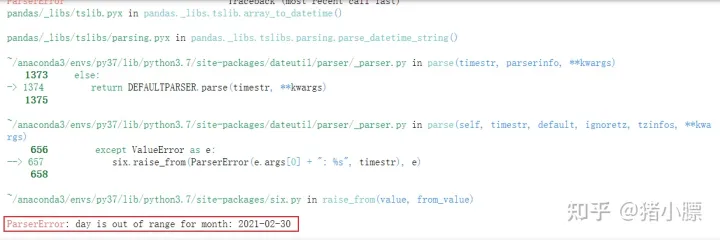
借助to_datetime函数处理错误
我们借助to_datetime函数中的errors参数来处理错误。它一共有以下几个选项
'raise':默认，转换失败会抛出异常'coerce':转换失败会赋值NaT'ignore':忽略，原值返回

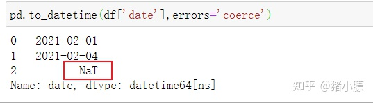

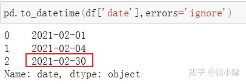
多列转换
当我们需要一次转换多列的类型的时候，astype函数就会非常方便
df = df.astype({
'start': 'datetime64',
'end': 'datetime64'
})
astype('datetime64') vs to_datetime()
astype
优点
- 可以一次转换多列
- 更高的性能
缺点
- 无法灵活的自定义日期时间格式
- 错误处理不灵活，碰到无法转化的日期，只能选择raise和ignore
to_datetime
优点
- 更灵活的时间日期的格式化
- 更灵活的错误处理
缺点
- 性能不如astype
- 无法一次转换多列类型
Python中的时间转换
时间转字符串函数strftime
这个函数的意思是formatting time，就是将时间格式化成需要特定格式的字符串
from datetime import datetime
# 获取当前时间
nw=datetime.now()
# 把当前时间转换为字符串
time_str=datetime.strftime(nw,'%Y-%m-%d %H:%M:%S')

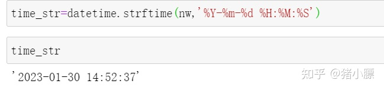
字符串转时间函数strptime
这个函数的意思是parse time，是将字符串格式时间转换为需要格式的时间函数
from datetime import datetime
p_time=datetime.strptime(time_str,'%Y-%m-%d %H:%M:%S')

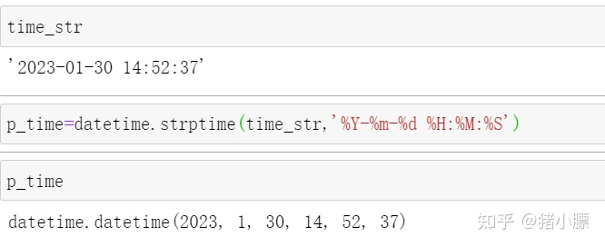
strftime() and strptime() Format Codes
| Directive | Meaning | Example |
|---|---|---|
| %a | Weekday as locale’s abbreviated name. | Sun, Mon, …, Sat (en_US); |
| %A | Weekday as locale’s full name. | Sunday, Monday, …, Saturday (en_US); |
| %w | Weekday as a decimal number, where 0 is Sunday and 6 is Saturday. | 0, 1, …, 6 |
| %d | Day of the month as a zero-padded decimal number. | 01, 02, …, 31 |
| %b | Month as locale’s abbreviated name. | Jan, Feb, …, Dec (en_US); |
| %B | Month as locale’s full name. | January, February, …, December (en_US); |
| %m | Month as a zero-padded decimal number. | 01, 02, …, 12 |
| %y | Year without century as a zero-padded decimal number. | 00, 01, …, 99 |
| %Y | Year with century as a decimal number. | 0001, 0002, …, 2013, 2014, …, 9998, 9999 |
| %H | Hour (24-hour clock) as a zero-padded decimal number. | 00, 01, …, 23 |
| %I | Hour (12-hour clock) as a zero-padded decimal number. | 01, 02, …, 12 |
| %p | Locale’s equivalent of either AM or PM. | AM, PM (en_US); |
| %M | Minute as a zero-padded decimal number. | 00, 01, …, 59 |
| %S | Second as a zero-padded decimal number. | 00, 01, …, 59 |
| %f | Microsecond as a decimal number, zero-padded to 6 digits. | 000000, 000001, …, 999999 |
| %z | UTC offset in the form ±HHMM[SS[.ffffff]] (empty string if the object is naive). | (empty), +0000, -0400, +1030, +063415, -030712.345216 |
| %Z | Time zone name (empty string if the object is naive). | (empty), UTC, GMT |
| %j | Day of the year as a zero-padded decimal number. | 001, 002, …, 366 |
| %U | Week number of the year (Sunday as the first day of the week) as a zero-padded decimal number. All days in a new year preceding the first Sunday are considered to be in week 0. | 00, 01, …, 53 |
| %W | Week number of the year (Monday as the first day of the week) as a zero-padded decimal number. All days in a new year preceding the first Monday are considered to be in week 0. | 00, 01, …, 53 |
| %c | Locale’s appropriate date and time representation. | Tue Aug 16 21:30:00 1988 (en_US); |
| %x | Locale’s appropriate date representation. | 08/16/88 (None); |
| %X | Locale’s appropriate time representation. | 21:30:00 (en_US); |
| %% | A literal '%' character. | % |
发布于 2023-01-31 14:13・IP 属地北京